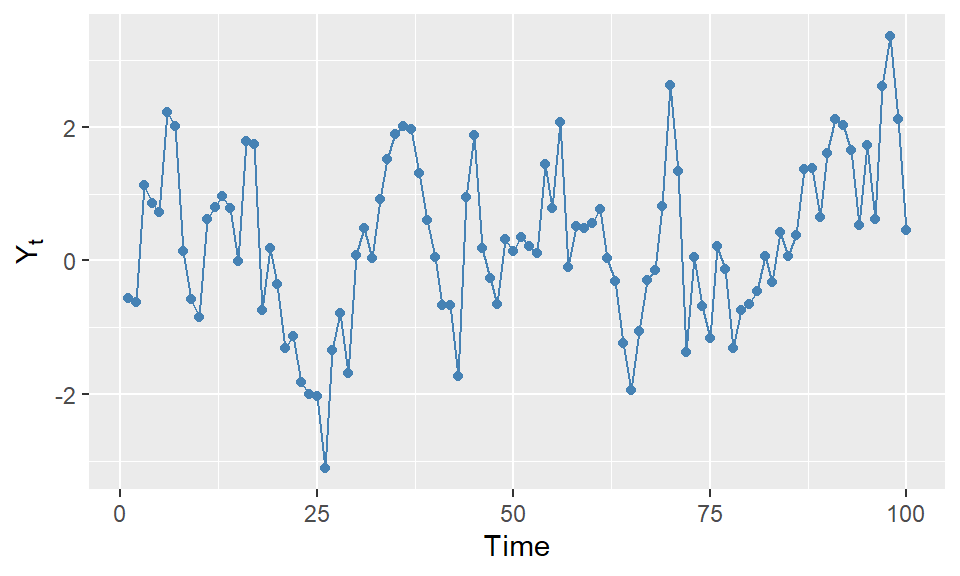

if (condition) {
# code to execute if condition is true
}3 Control Structures
3.1 Introduction
In this chapter, we introduce commonly used control structures in R. In a control structure, we usually use curly braces {} to indicate the start and end of the structure. We cover the following structures:
- Conditional statements:
if,ifelse,if...else, andif...else if...else - Switch statement:
switch - Loops:
for,whileandrepeat
3.2 Conditional Statements
We use a conditional statement to execute a code based on a condition. The commonly used conditional statement are
-
ifstatement -
ifelsestatement -
if...elsestatement -
if...else if...elsestatement
The syntax for the if statement is as follows:
If the condition evaluates to TRUE, the code inside the curly braces is executed. The curly braces are optional if there is only one line of code to execute: if (condition) code_to_execute.
# An example of if statement
x <- 10
if (x > 5) {
print("x is greater than 5")
}[1] "x is greater than 5"In a single line, the above if statement can be written as:
x <- 10
if (x > 5) print("x is greater than 5")[1] "x is greater than 5"The syntax for the ifelse statement is as follows:
ifelse(test_expression, value_if_true, value_if_false)The ifelse function evaluates the test_expression and returns value_if_true if the expression is TRUE, and value_if_false if the expression is FALSE. For example:
# An example of ifelse statement
x <- 10
ifelse(x > 5, "x is greater than 5", "x is less than or equal to 5")[1] "x is greater than 5"[1] "small" "small" "small" "big" "big" "big" [1] "negative" "positive" "zero" "positive" "negative" "positive"The syntax for the if...else statement is as follows:
if (condition) {
# code to execute if condition is true
} else {
# code to execute if condition is false
}If the condition evaluates to TRUE, the code inside the first block is executed; otherwise, the code inside the else block is executed. As an example, we use this conditional statement to calculate the median of a sample \(x_1,\dots,x_n\): \[
\begin{align*}
\text{median}(x)&=
\left\{
\begin{array}{l l}
\frac{1}{2}x_{(\frac{n}{2})}+\frac{1}{2}x_{(1+\frac{n}{2})}&\text{if \textit{n} is even},\\
x_{(\frac{n+1}{2})}& \text{if \textit{n} is odd},
\end{array}\right.
\end{align*}
\] where \(x_{(1)},\dots,x_{(n)}\) denote order statistics.
[1] 5We use the if...else if...else statement when we have multiple conditions to check. The syntax is as follows:
if (condition1) {
# code to execute if condition1 is true
} else if (condition2) {
# code to execute if condition2 is true
} else {
# code to execute if both conditions are false
}In the following example, we categorize schools based on their test scores using the caschool.csv dataset.
# Load caschool.csv dataset
caschool <- read.csv("data/caschool.csv")
caschool$category <- NA # Initialize a new column for category
# An example of if...else if...else statement to categorize schools based on test scores
for (i in 1:nrow(caschool)) {
if (caschool$testscr[i] >= 700) {
caschool$category[i] <- "Excellent"
} else if (caschool$testscr[i] >= 675) {
caschool$category[i] <- "Good"
} else if (caschool$testscr[i] >= 650) {
caschool$category[i] <- "Average"
} else {
caschool$category[i] <- "Below Average"
}
}
# Display the first few rows of the updated dataset
head(caschool[, c("testscr", "category")]) testscr category
1 690.80 Good
2 661.20 Average
3 643.60 Below Average
4 647.70 Below Average
5 640.85 Below Average
6 605.55 Below Average3.3 Switch Statement
We use the switch statement to select one of many code blocks to execute based on the value of an expression. The syntax is as follows:
switch(expression,
case1 = { # code to execute for case1 },
case2 = { # code to execute for case2 },
...
default = { # code to execute if no cases match }
)In the following example, we use the switch statement to calculate different measures of central tendency based on the input parameter.
# An example of switch statement
central <- function(y, measure) {
switch(measure,
Mean = ,
mean = mean(y),
median = median(y),
geometric = if (any(y <= 0)) NULL else prod(y)^(1/length(y)),
"Invalid measure")
}
y = rnorm(100) # A random sample of 100 normal variables
central(y, "mean") # Calculate mean[1] 0.05604852central(y, "Mean") # Calculate mean[1] 0.05604852central(y, "Median") # Calculate median[1] "Invalid measure"central(y, "geometric") # Calculate geometric meanNULLcentral(y, "mode") # Invalid measure[1] "Invalid measure"Note that in the switch statement, central(y, "Mean") and central(y, "mean") both compute the mean of y because there is no expression between Mean = , and mean = mean(y).
3.4 Loops
We use loops to execute a block of code repeatedly for a specified number of times or until a certain condition is met. The commonly used loops in R are:
-
forloop -
whileloop -
repeatloop
The syntax for the for loop is as follows:
for (variable in sequence) {
# code to execute for each value in the sequence
}The for loop iterates over each value in the sequence, assigning it to the variable, and executes the code block for each iteration. It stops when all values in the sequence have been processed.
As an example, we consider the following first order autoregressive (AR(1)) model: \[ \begin{align*} Y_t &= \phi Y_{t-1} + \epsilon_t, \quad t=1,2,\dots,T,\\ \end{align*} \] where \(|\phi|<1\) and \(\epsilon_t\sim \text{i.i.d. } N(0,\sigma^2)\). In the following, we simulate a time series of length \(T=100\) with \(\phi=0.7\) and \(\sigma^2=1\).
# An example of for loop to simulate AR(1) model
set.seed(123) # For reproducibility
T <- 100
phi <- 0.7
sigma <- 1
Y <- numeric(T) # Initialize a vector to store the time series
epsilon <- rnorm(T, mean = 0, sd = sigma) # Generate white noise
Y[1] <- epsilon[1] # Set the first value
for (t in 2:T) {
Y[t] <- phi * Y[t - 1] + epsilon[t]
}
# Convert to a dataframe
df <- data.frame(Time = seq_along(Y), Y = Y)
# Display the first few values of the simulated time series
head(df) Time Y
1 1 -0.5604756
2 2 -0.6225104
3 3 1.1229510
4 4 0.8565741
5 5 0.7288896
6 6 2.2252877# The plot of the simulated time series using ggplot2
library(ggplot2)
# Convert to data frame for ggplot
df <- data.frame(Time = seq_along(Y), Y = Y)
# Plot
ggplot(df, aes(x = Time, y = Y)) +
geom_line(color = "steelblue") +
geom_point(color = "steelblue", size = 1.5) +
labs(x = "Time", y = expression(Y[t]))
The syntax for the while loop is as follows:
while (condition) {
# code to execute while condition is true
}The while loop continues to execute the code block as long as the condition evaluates to TRUE. The AR(1) model simulation can also be implemented using a while loop as follows:
# An example of while loop to simulate AR(1) model
set.seed(123) # For reproducibility
T <- 100
phi <- 0.7
sigma <- 1
Y <- numeric(T) # Initialize a vector to store the time series
epsilon <- rnorm(T, mean = 0, sd = sigma) # Generate error terms
Y[1] <- epsilon[1] # Set the first value
t <- 2
while (t <= T) {
Y[t] <- phi * Y[t - 1] + epsilon[t]
t <- t + 1
}
# Convert to a dataframe
df <- data.frame(Time = seq_along(Y), Y = Y)
# Display the first few values of the simulated time series
head(df) Time Y
1 1 -0.5604756
2 2 -0.6225104
3 3 1.1229510
4 4 0.8565741
5 5 0.7288896
6 6 2.2252877Note that in the while loop, we need to manually increment the counter variable t to avoid an infinite loop.
Finally, the syntax for the repeat loop is as follows:
repeat {
# code to execute repeatedly
if (condition) {
break # exit the loop if condition is met
}
}The repeat loop executes the code block repeatedly until a break statement is encountered. The AR(1) model simulation can also be implemented using a repeat loop as shown in the following example.
# An example of repeat loop to simulate AR(1) model
set.seed(123) # For reproducibility
T <- 100
phi <- 0.7
sigma <- 1
Y <- numeric(T) # Initialize a vector to store the time series
epsilon <- rnorm(T, mean = 0, sd = sigma) # Generate error terms
Y[1] <- epsilon[1] # Set the first value
t <- 2
repeat {
Y[t] <- phi * Y[t - 1] + epsilon[t]
t <- t + 1
if (t > T) {
break
}
}
# Convert to a dataframe
df <- data.frame(Time = seq_along(Y), Y = Y)
# Display the first few values of the simulated time series
head(df) Time Y
1 1 -0.5604756
2 2 -0.6225104
3 3 1.1229510
4 4 0.8565741
5 5 0.7288896
6 6 2.2252877